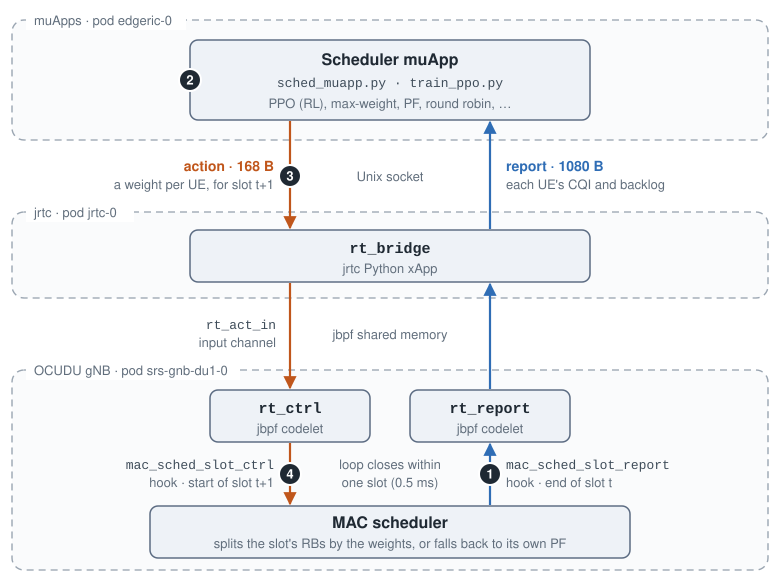
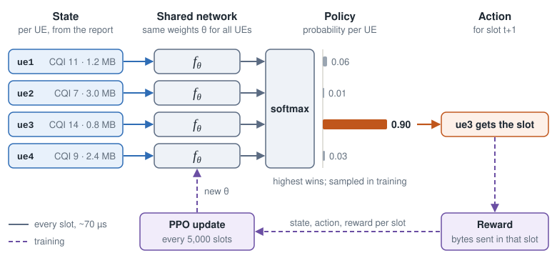
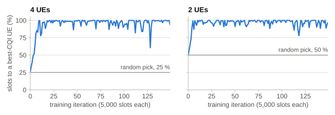
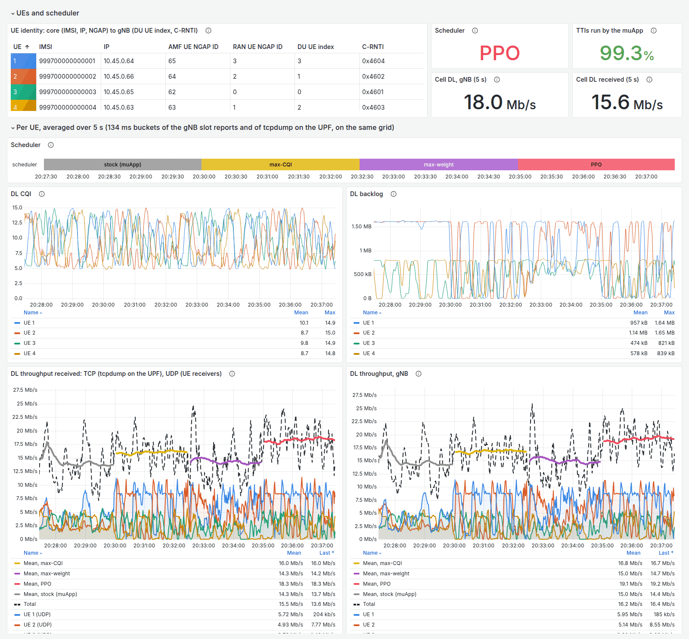
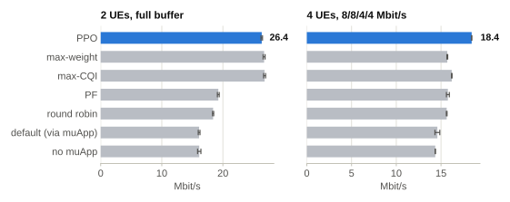

AI-driven muApp for RAN Scheduling¶
EdgeRIC-RT puts a muApp in the gNB’s scheduling loop. Every 0.5 ms slot, the gNB reports the state of every UE. The muApp answers with an action for the next downlink slot, and the gNB applies it in exactly that slot. The muApp runs a PPO policy trained online against the live gNB, or a classic scheduler such as max-weight or proportional fair.
Code: edgeric-ocudu-jbpf
(branch open-ai-ran-tutorial). Full guide:
edgeric-rt.md.
EdgeRIC-RT Scheduling Loop¶


One turn of the loop. Blue carries the report up to the muApp, and orange carries the action back down. The numbers match the steps below.¶
Report. At the end of slot t, the
mac_sched_slot_reporthook runs thert_reportcodelet. Its report travels through jbpf andrt_bridgeto the muApp.Decide. The muApp turns the newest report into a weight per UE for the next DL slot.
Act. The action travels back through
rt_bridgeintort_act_in, tagged with that slot.Apply. When that slot starts,
rt_ctrlhands the action to the scheduler, which splits the slot’s RBs by the weights.
The whole loop must fit in one slot. A late action is dropped, and that slot runs the gNB’s own scheduler.
Scheduling Policies¶
Baselines¶
Max-weight: the slot goes to the UE with the largest CQI × backlog.
Max-CQI: the slot goes to the UE with the best CQI.
Proportional fair (PF): the slot goes to the UE whose CQI is highest relative to its average.
Round robin: the UEs with data take turns.
Default: the muApp runs but sends no action, so the gNB’s own scheduler runs every slot.
No muApp: the gNB’s own scheduler, with no muApp running.
RL-based Policy¶


The network sees each UE’s CQI and backlog, plus their mean and max over all UEs. Every UE goes through the same weights, so one policy works for any number of UEs.¶
train_ppo.py trains the policy online against the live gNB, and sched_muapp.py runs it.
Each report echoes the action applied in its slot, so every reward is paired with the action that
earned it.


Training with full buffers, where the best choice is a UE with the best CQI. Both policies learn it within about 15 iterations, about a minute of live traffic.¶
Dashboard¶


A live run at 8/8/4/4 Mbit/s: the default scheduler, max-CQI, max-weight and PPO, 2.5 minutes each. The thick line on each throughput plot is the mean under the policy that runs. Click to enlarge.¶
Throughput¶


Mean DL throughput at the gNB over three 60 s runs per policy, each on the same channel replay (two runs for max-weight and round robin at 8/8/4/4). Error bars show one standard deviation across runs.¶
Timing¶
Report to action at the bridge, with 4 UEs and full-buffer UDP:
Path |
p50 / p99 |
DL slots on time |
|---|---|---|
|
51 / 90 µs |
99.9–100 % |
muApp, classic schedulers |
110 / 180–210 µs |
99.8–99.9 % |
muApp, PPO |
250 / 390–430 µs |
98.1–98.5 % |
Run It¶
On the cellular digital twin, after the one-time build in the guide:
# 4 UEs on CQI 4-15 channels, with the EdgeRIC-RT codelets and rt_bridge loaded
bash scripts/setup_zmq_chan_demo.sh 4 --edgeric \
--traces duranta-oai-ue/ue_traces_cqi_4ue.conf
bash scripts/ue_rnti_map.sh 4 # ue1..ue4 -> C-RNTI
bash scripts/traffic_nue.sh start --udp 100M # full-buffer downlink
# run the trained PPO policy (or --scheduler maxweight, pf, rr, ...)
bash scripts/edgeric_muapp.sh start sched --scheduler rl --model models/ppo_walk4/last.npz
bash scripts/edgeric_muapp.sh logs sched # Mbit/s per UE, slots on time, latency
# or train your own (one muApp at a time)
bash scripts/edgeric_muapp.sh stop sched
bash scripts/edgeric_muapp.sh start train --tag my_ppo # policy lands in runs/my_ppo/